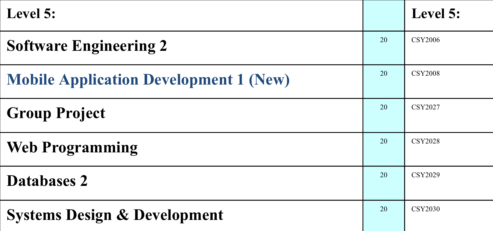

Year 2:
I will be furthing Software Engineering 2. I will be proceeding with where I left off in Year 1. This was the final draft of the products which were to be created for my client. (Website, Kiosk & Database management system). This year SE1 on covered part of the Software lifecycle and in the second this will be completed.
A new module will be included within this year called Mobile application development. Here we cover how mobile application are created, the tools and techniques used to create these apps and create apps of our own.
Web development will be continued in this year where I will be covering new technologies and techniques such as PHP and JavaScript to allow our websites to be more interactive and engaging with the user as CSS can only do so much.
Databases 2 will be introduced and here a deeper dive into databases will be taken. It will take our current knowledge of relational database and enhance our knowledge of different types of databases and we ill be creating out own databases to test our knowledge from the theory we have been taught.
Systems design and developement will cover methods of creating systems which allow us as the developer to take steps which will allow the creation of the product to be as smooth as possible. Below is a image of the modules:
